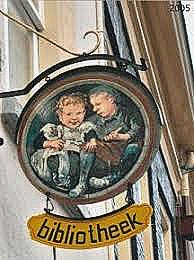
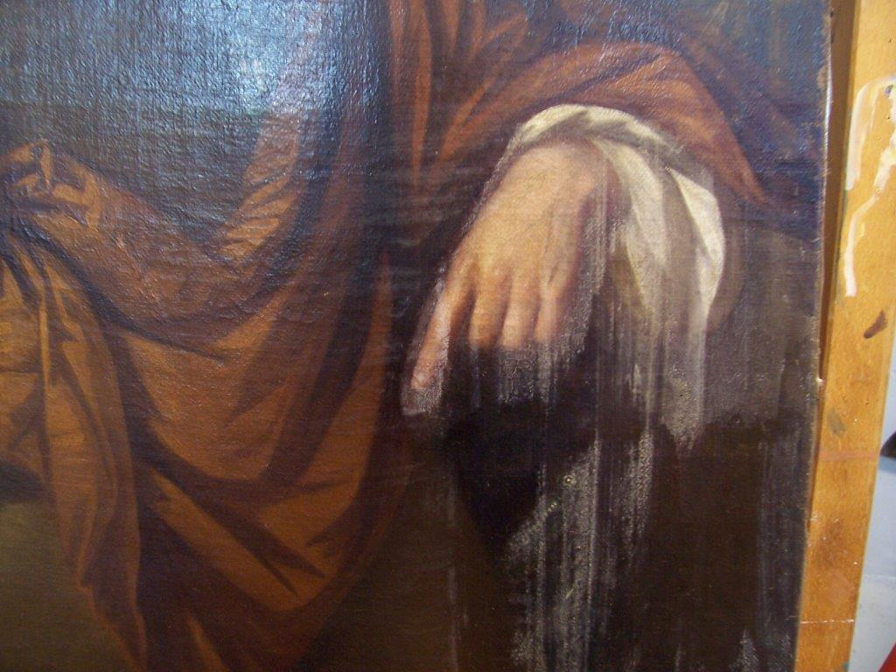
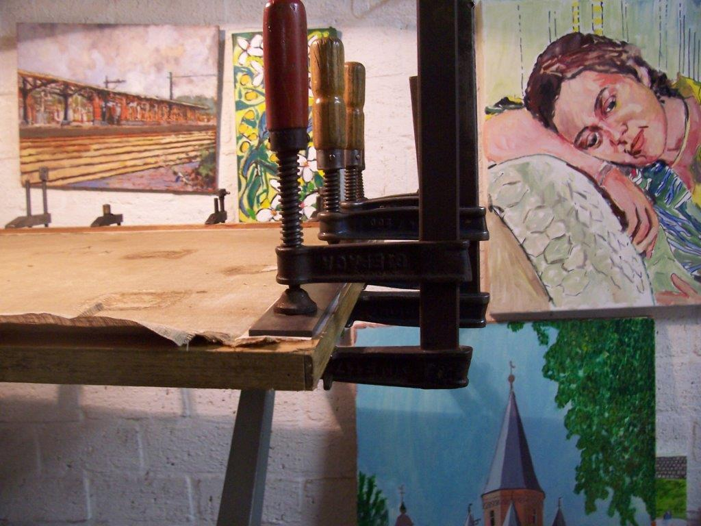
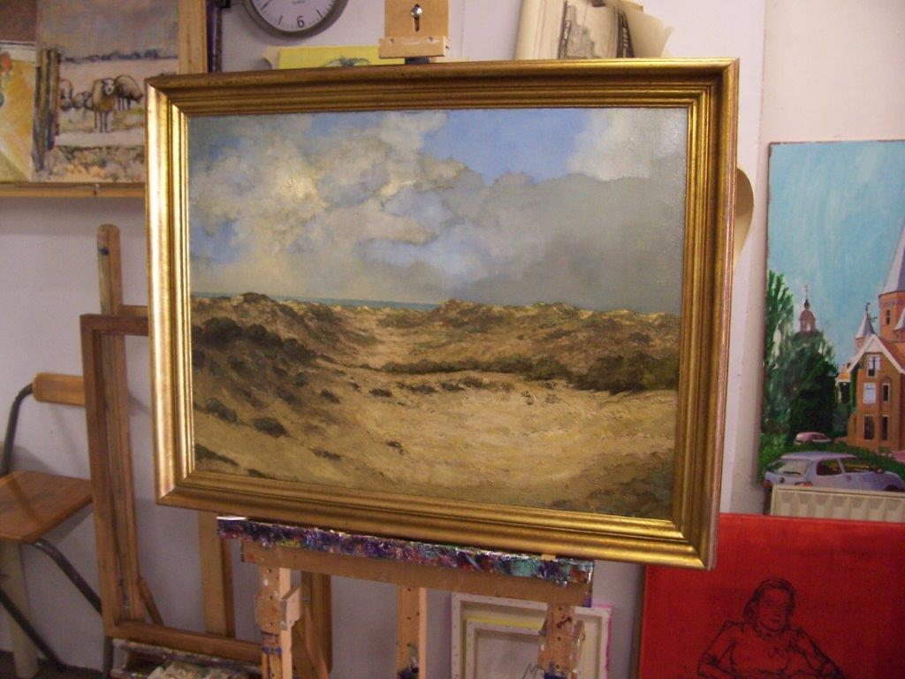
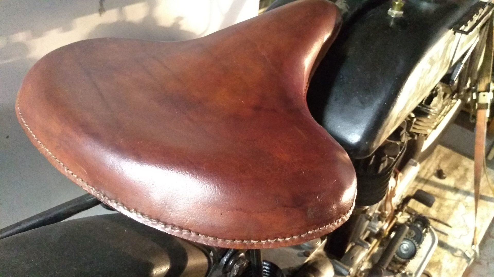
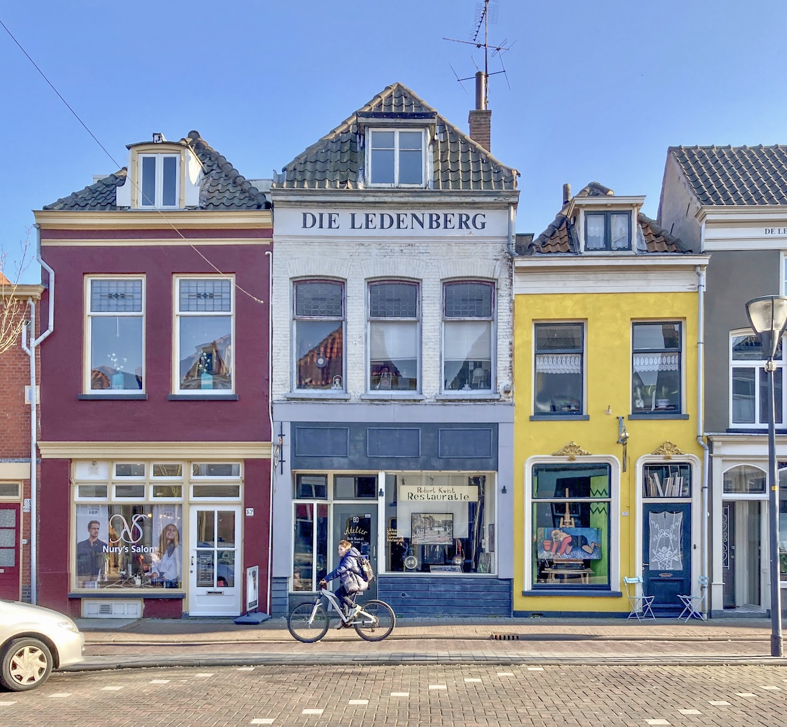

Uithangborden
Een geschilderd bord aan de gevel, zoals Ot en Sien voor St. Kinderboek Zutphen (€ 1200). Een eigen bord voor uw zaak? Bel gerust om het te bespreken.
Atelier aan de Laarstraat, Zutphen
Rob Kwist restaureert schilderijen en lijsten, schildert op verzoek en geeft les in zijn atelier. Brengt u een dierbaar stuk langs? Er is altijd koffie.
5,0 op Google, uit 2 reviews

Is een schilderij in de loop der jaren dof, vuil of beschadigd geraakt? Dan breng ik het terug naar hoe het was toen het net gemaakt werd. Alles wat ik doe moet altijd weer omkeerbaar zijn. Zo blijft het werk van de oorspronkelijke maker intact.
Omdat elk stuk anders is, geef ik hier geen vaste prijzen. Ik bekijk uw schilderij, maak een plan en u krijgt vooraf een offerte. Vrijblijvend informeren kan altijd.
Bel voor een afspraak
★★★★★
"Ik bracht een dierbaar schilderij, somber van nicotineaanslag en ander vuil. Rob heeft het schoongemaakt en in zijn oude luister hersteld. Kleurrijk en sprankelend, echt prachtig! En voor een heel redelijke prijs. Ik ben er superblij mee!"

Schilderen is mijn passie. Het liefst hield ik alles zelf, maar het geeft een voldaan gevoel als een schilderij bij een ander helemaal tot zijn recht komt. U bent welkom om ze in het atelier te komen bekijken.
Ik schilder ook op verzoek: portretten en andere onderwerpen. Bel of mail gerust voor de mogelijkheden en de prijs. Hangt er een lijst om het werk, dan zit die in de prijs. Wilt u het schilderij zonder de lijst? Dat is bespreekbaar.
En nog veel meer, van Zutphen en Leiden tot de Franse kust. Vraag naar wat er nu in het atelier hangt.
Net begonnen, vastgelopen in een schilderij of zin in meer verdieping? In de schilderscursus leert u de basistechnieken en is er ruimte voor uw eigen ideeën. Wat wilt u maken, hoe pakt u het aan en waar let u op? We werken naar de waarneming en naar de verbeelding.
Iedereen werkt aan zijn eigen doek, in een gemoedelijke sfeer. De niveaus en onderwerpen verschillen, maar we willen allemaal iets moois maken.
Al vanaf mijn zesde wilde ik weten hoe iets gemaakt is. Gereedschap was er niet veel, de wil om het toch te maken was sterker. Met twee rechterhanden, geduld en de durf om anderen om kennis te vragen kwam ik waar ik nu ben. Het resultaat moet aan mijn eigen hoge eisen voldoen, en anders doe ik het opnieuw.

Een geschilderd bord aan de gevel, zoals Ot en Sien voor St. Kinderboek Zutphen (€ 1200). Een eigen bord voor uw zaak? Bel gerust om het te bespreken.

Het was een wens om op een motorfiets uit de jaren twintig te rijden. Versleten onderdelen maak ik als nieuw, ontbrekende maak ik bij of ontwerp ik zelf, allemaal maat- en handwerk. Van motorblok, versnellingsbak en carburateur tot verlichting, toeter, tank en spatborden. Een zadel opnieuw bekleden kost € 350.
Draaiwerk, schroefdraden, plaat-, pijp- en buigwerk, solderen, klinken, lassen, leerwerk, lakrestauratie, lagers, reviseren en ombouwen.
Rob, ontzettend bedankt voor de prachtige schilderijen! Mijn vrouw is, net als ik, razend enthousiast! Ze hebben een prominente plek in huis gekregen! We kunnen er letterlijk de ogen niet van afhouden.
"Ik houd je winkel even in de gaten voor nog wat schilderijen. Het blijft me een raadsel hoe iemand op deze manier zóveel expressie op een doek kan aanbrengen! FANTASTISCH!"

Achter de etalage met "Restauratie" op het raam zit het atelier. Bel of mail even, dan weet u zeker dat ik er ben. Er is altijd koffie.